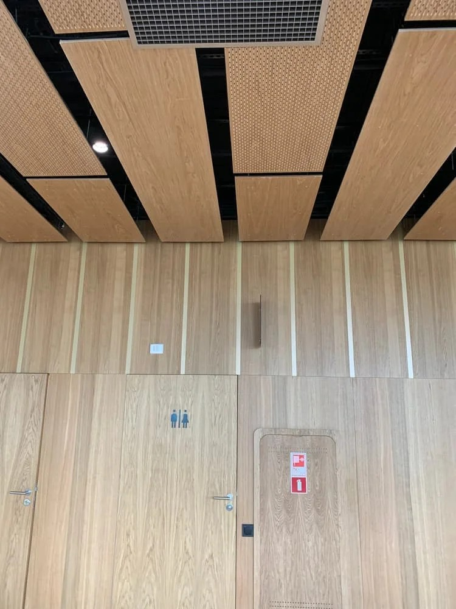
Стеновые панели
Окраска, ПВХ, HPL. Отбойные доски и монтажные профили.
Предложение / РесурсПроект
Поставляем стеновые и потолочные панели, двери для общественных пространств.
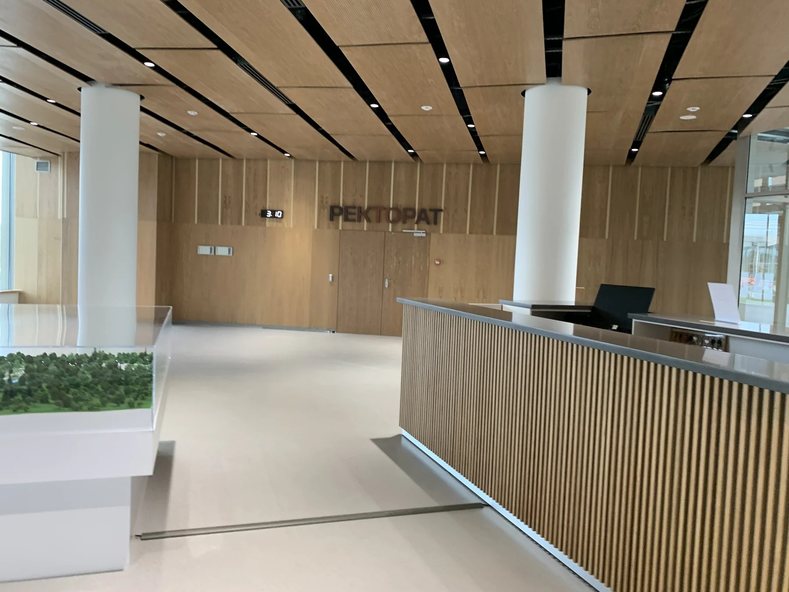
Предложение / РесурсПроект
Помогаем сохранить характер интерьера: подбираем декоры, фактуры и конструкции из материалов заводов-партнёров.

Окраска, ПВХ, HPL. Отбойные доски и монтажные профили.
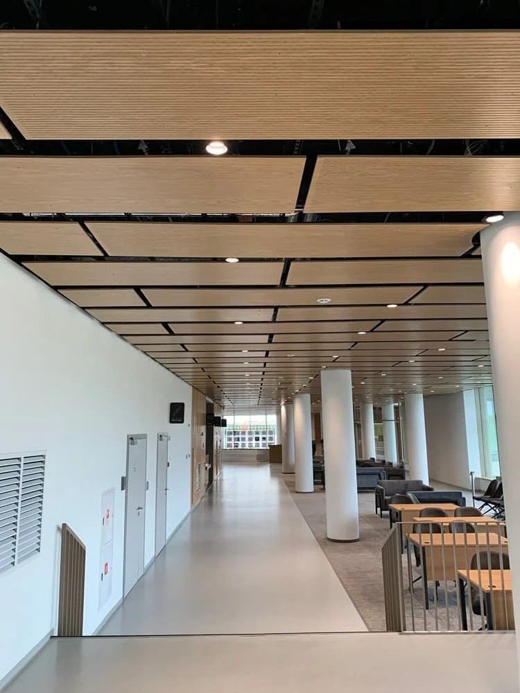
Mercury для Т-24 и металлические кассеты CLIP-IN.
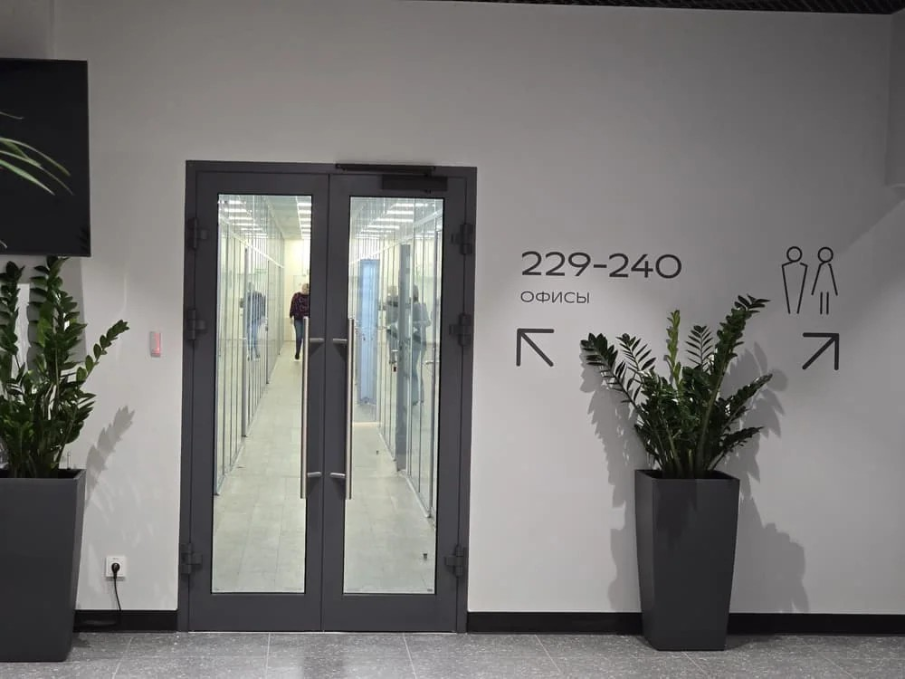
Противопожарные, внутренние и специальные исполнения.
Почему мы / РесурсПроект
Увязываем идею интерьера с доступными материалами, техническими требованиями и способом монтажа.
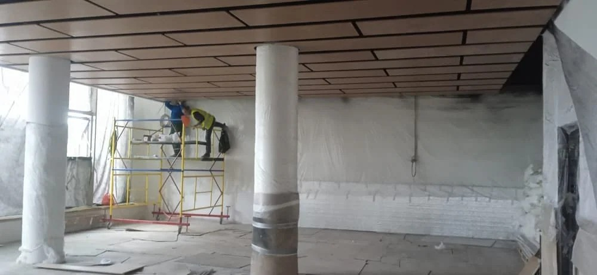
около 2600 м²
стеновых панелей в проекте «Сенеж» по спецификациям
Стеновые панели / РесурсПроект
От однотонной окраски до древесных декоров и HPL — под требования к отделке помещения.
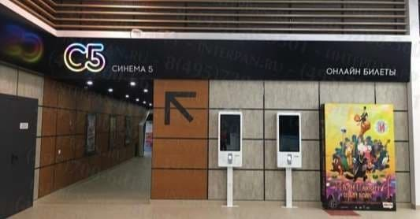
Акриловое покрытие с защитным лаком. Цвета RAL и декоративная печать.
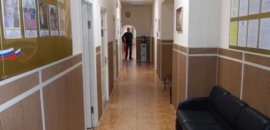
Плёнка ПВХ: однотонные покрытия, древесные декоры и другие фактуры.
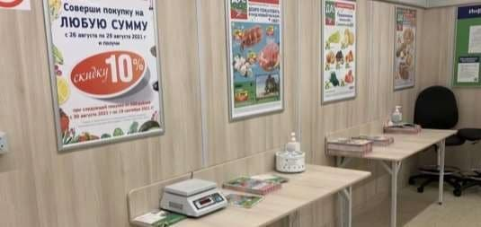
Пластик HPL для помещений с механическими нагрузками на стены.
Стеновые панели / РесурсПроект
Основные панели, защита стен и детали монтажа — в одной спецификации.
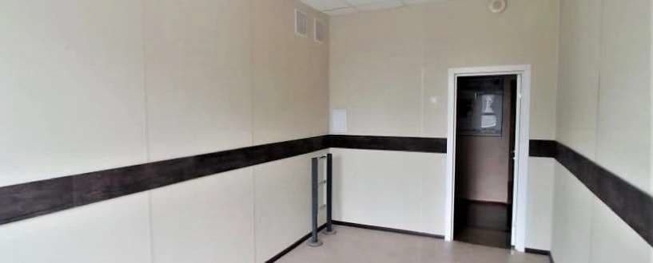
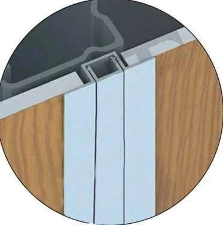
Потолки / РесурсПроект
Панели для открытой подвесной системы с видимым профилем.
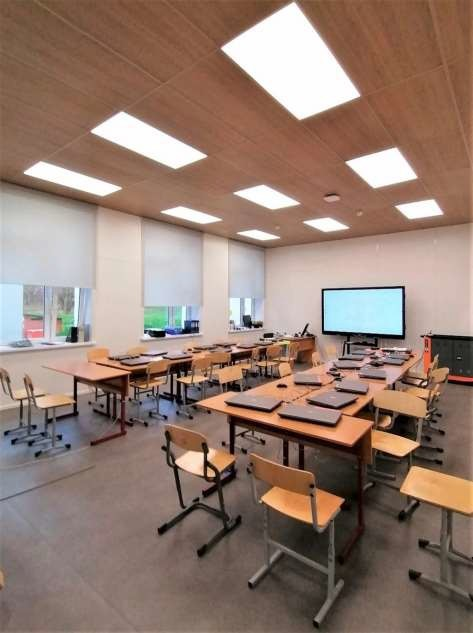
Потолки / РесурсПроект
Металлические кассеты со скрытым креплением, в том числе для чистых помещений.
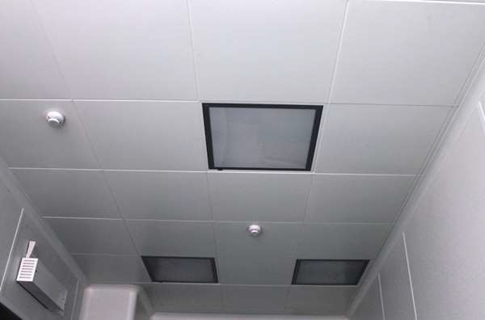
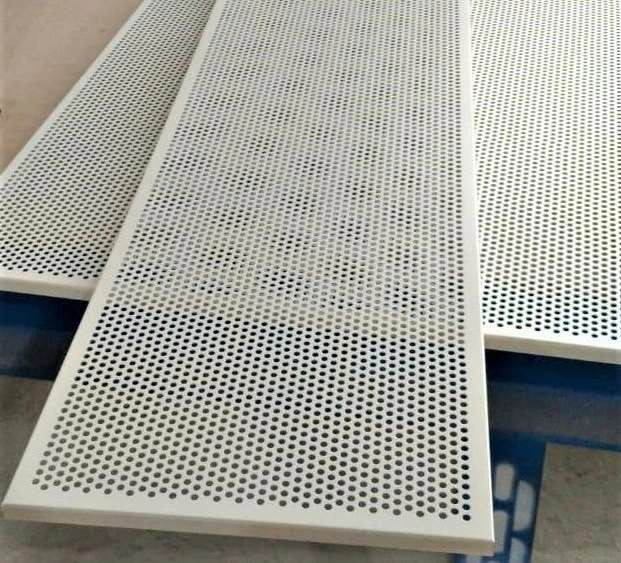
Двери / РесурсПроект
Подбираем дверной блок по назначению помещения и требованиям проекта.
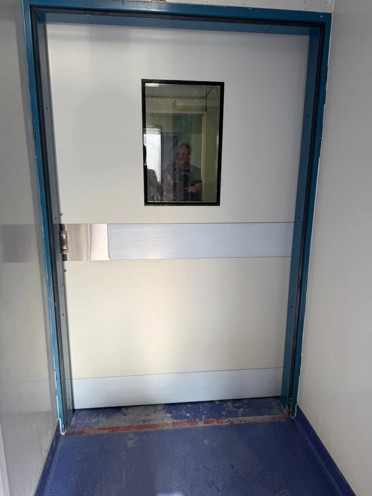
Двери / РесурсПроект
Согласуем конструкцию, отделку и комплектность до заказа.
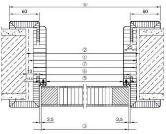
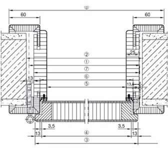
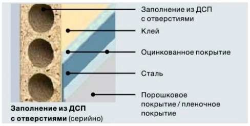
Для дизайнеров / РесурсПроект
Широкие возможности отделки — в пределах характеристик, требуемых для конкретной зоны.
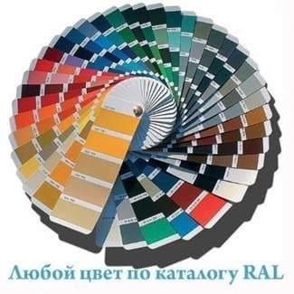
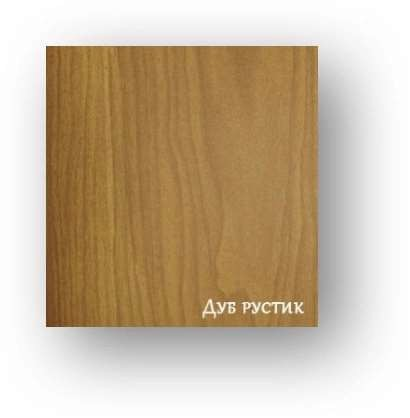
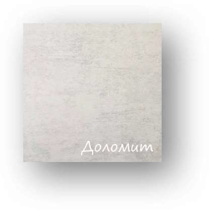
Объекты / РесурсПроект
Поставка и монтаж декоративных стеновых и потолочных панелей. Солнечногорск, 2023–2024.

Объекты / РесурсПроект
Офисы и медицинские учреждения: материалы и узлы, с которыми мы работаем на практике.
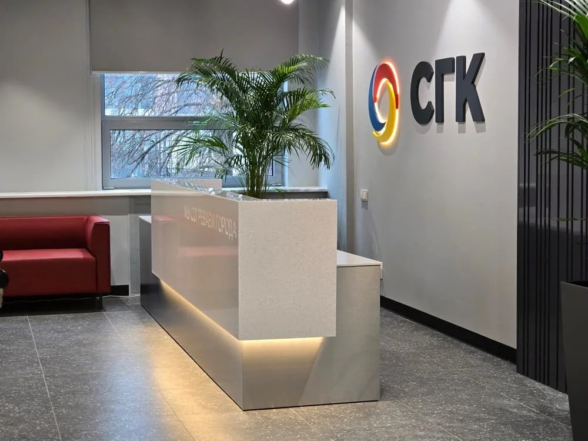
Отделка холлов и лестниц, противопожарные стеклянные перегородки и двери по проекту. Готовый результат — октябрь 2025.
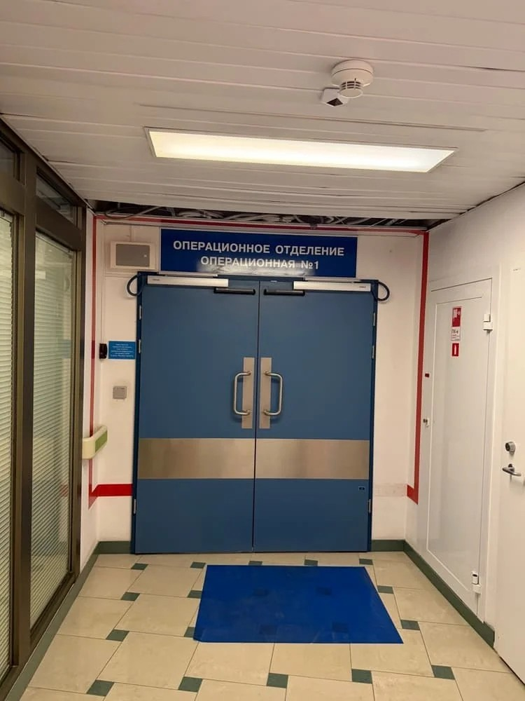
Дверные блоки и отделка медицинских помещений. Работы и поэтапная сдача отражены в материалах объекта 2025–2026 годов.
Как заказать / РесурсПроект
Один порядок согласования для панелей, потолочных систем и дверных блоков.
Проект, ведомость или размеры; назначение помещений и требования к материалам.
Сопоставляем основу, покрытие, исполнение, декор и комплектующие.
Фиксируем номенклатуру, объёмы, документы, стоимость и условия поставки.
Организуем передачу согласованного комплекта. Монтаж — отдельным составом по договорённости.
Как заказать / РесурсПроект
Стеновые панели, потолочные панели и двери для вашего объекта.
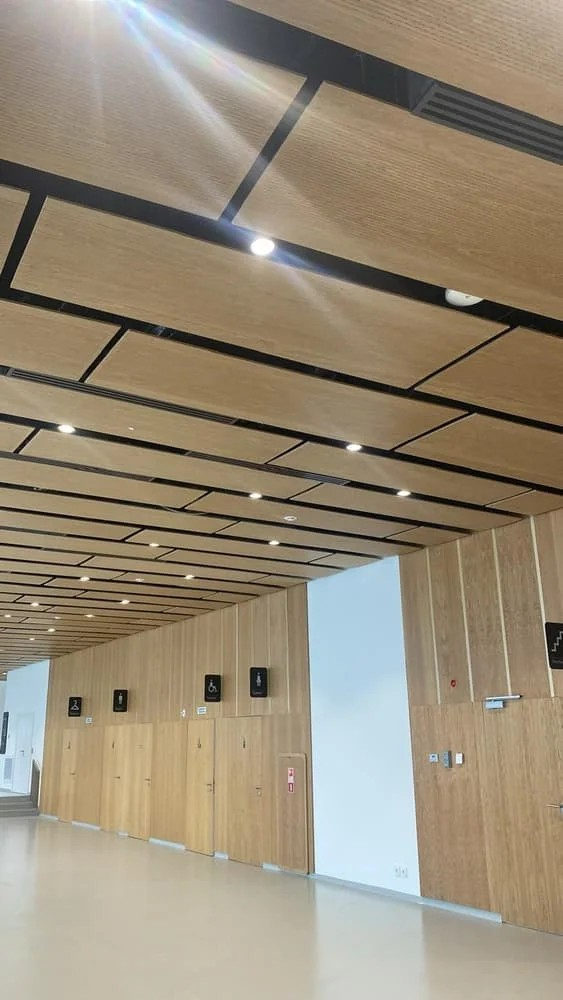